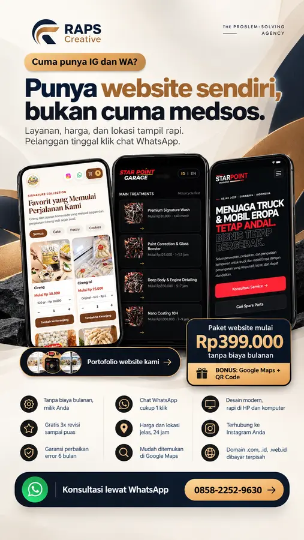

Company profile
Profil bisnis, layanan, keunggulan, portofolio, dan kontak dalam satu website.
RAPS Creative membantu bisnis lokal tampil lebih terpercaya melalui website modern, cepat, dan nyaman dibuka dari HP.

Halaman yang membantu customer memahami produk, menemukan lokasi, dan menghubungi bisnis.
Profil bisnis, layanan, keunggulan, portofolio, dan kontak dalam satu website.
Menu, lokasi, jam buka, galeri, Google Maps, dan tombol pemesanan.
Halaman promosi yang fokus pada satu penawaran atau campaign.
Dari bahan awal sampai website siap dibuka customer.
Kumpulkan tujuan, identitas, layanan, foto, dan informasi penting.
Konten diubah menjadi halaman yang enak dibaca dan sesuai karakter brand.
Website diuji di HP dan desktop, lalu dipasang ke domain bisnis.